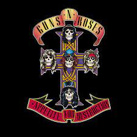

Discografia
Álbumes de estudio
- Appetite for Destruction (1987)
- G N' R Lies (1988)
- Use Your Illusion I (1991)
- Use Your Illusion II (1991)
- The Spaghetti Incident? (1993)
- Greatest Hits (Recopilación) (2004)
- Chinese Democracy (2008)

Giras Mundiales
- Hell Tour (1985)
- Reckless Road (1985-1986)
- Appetite for Destruction Tour (1987-1988)
- Use Your Illusion Tour (1991-1993)
- Guns N' Roses/Metallica Stadium Tour (1992)
- Chinese Democracy World Tour (2001-2002; 2006-2007; 2009-2010)
- Latin American Tour 2011 (2011)
- Up Close And Personal (2012)
- Appetite for Democracy (2012-2013)
- South American Tour 2014 (2014)
- No Trickery! An Evening Of Destruction (Hard Rock Hotel Las Vegas 2014)
- Not in This Lifetime... Tour (2016-2019)
- Guns N' Roses 2020 Tour (2020-2022)
Miembros
- Axl Rose: voz, piano (1985-actualidad)
- Slash: guitarra principal (1985–1996, 2016-actualidad)
- Duff McKagan: bajo, coros (1985–1998, 2014, 2016-actualidad)
- Richard Fortus: guitarra rítmica (2002-actualidad)
- Frank Ferrer: batería (2006-actualidad)
- Dizzy Reed: teclados, piano, sintetizador, coros (1990-actualidad)
- Melissa Reese: teclados, piano, sintetizador, coros (2016-actualidad)